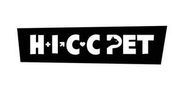

Trade Mark Journal No.2025/030 25 July 2025
UK00004235489 17 July 2025 (3,5,21,31)

- Class 3
- Toothpaste; Tooth powder; Non-medicated mouth washes for pets; Mouthwashes, not for medical purposes; Fragrances for pets; Perfumes; Soaps for pets; Body wash; Pet shampoos; Wipes impregnated with a skin cleanser; Wipes impregnated with cleansing preparations for pets; Tooth gel; Cosmetics in the form of gels; Non-medicated paw balms for pets; Skin care balms, other than for medical purposes; Non-medicated pet shampoos; Aromatic essential oils; Balms, other than for medical purposes; Non-medicated skin balms; Deodorants for pets.
- Class 5
- Dietary supplements for animals; Protein supplements for animals; Vitamins for animals; Dietetic animal foodstuffs for medical purposes; Medicinal healthcare preparations; Dietetic foods adapted for medical use; Dietary and nutritional supplements; Dietary supplements for human beings and animals; Dietary pet supplements in the form of pet treats; Nutritional supplements for pets; Dietary supplements for pets; Vitamins for pets; Plaque-removing wipes impregnated with medicated dental preparations for pets; Herbal anti-itch and sore skin ointment for pets; antibacterial soap; anti-itch creams; Disinfectants; Protein supplements; Dietary fibre; Disinfectant wipes.
- Class 21
- Toothbrushes; Toothbrushes for pets; Toothbrushes for animals; Electric pet brushes; Combs for pets; Animal grooming gloves; Basins [bowls]; Combs for animals; Scrubbing brushes; deshedding combs for pets; brushes for pets; bath brushes; Skin cleansing brushes; Cleaning instruments, hand-operated; lint removers, electric or non-electric; Cages for pets; Pet feeding and drinking bowls; Pet treat jars; feeding vessels for pets.
- Class 31
- Pet food in the nature of powders for dental health and wellness; Pet food; Animal foodstuffs; Dog biscuits; Fodder; Edible chews for animals; Edible pet treats; Edible chews for animals; Digestible teeth cleaning treats for dogs; Pet beverages; Yeast for animal consumption; Meal for animals; canned foodstuffs for cats; canned foodstuffs for dogs; milk-based foodstuffs for animals; dog food; cat food; aromatic sand [litter] for pets; sanded paper [litter] for pets; cat litter.
HICC PTE. LTD.
Representative: Keltie LLP